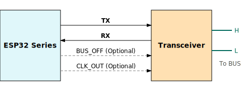
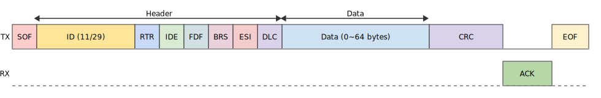
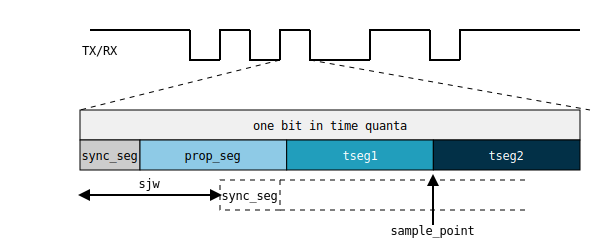

Two-Wire Automotive Interface (TWAI)
This document introduces the features of the Two-Wire Automotive Interface (TWAI) controller driver in ESP-IDF. The chapter structure is as follows:
Overview
TWAI is a highly reliable, multi-master, real-time, serial asynchronous communication protocol designed for automotive and industrial applications. It is compatible with the frame structure defined in the ISO 11898-1 standard and supports both standard frames with 11-bit identifiers and extended frames with 29-bit identifiers. The protocol supports message prioritization with lossless arbitration, automatic retransmission, and fault confinement mechanisms. The ESP32 includes 1 TWAI controllers, allowing for the creation of 1 driver instances.
The TWAI controllers on the ESP32 are not compatible with FD format frames and will interpret such frames as errors.
Thanks to its hardware-based fault tolerance and multi-master architecture, the TWAI driver is ideal for scenarios such as:
Serving as a robust communication bus in environments with significant electrical noise
Enabling long-distance communication across multiple sensors/actuators with resilience to single-node failures
Building decentralized distributed local networks that avoid the unpredictability of single-master designs
Acting as a bridging node alongside other communication protocols
Getting Started
This section provides a quick overview of how to use the TWAI driver. Through simple examples, it demonstrates how to create a TWAI node instance, transmit and receive messages on the bus, and safely stop and uninstall the driver. The general usage flow is as follows:

Hardware Connection
The ESP32 does not integrate an internal TWAI transceiver. Therefore, an external transceiver is required to connect to a TWAI bus. The model of the external transceiver depends on the physical layer standard used in your specific application. For example, a TJA105x transceiver can be used to comply with the ISO 11898-2 standard.
Specifically:
For single-node testing, you can directly short the TX and RX pins to omit the transceiver.
BUS_OFF (optional): Outputs a low logic level (0 V) when the TWAI controller enters the bus-off state. Otherwise, it remains at a high logic level (3.3 V).
CLK_OUT (optional): Outputs the time quantum clock of the controller, which is a divided version of the source clock.
Creating and Starting a TWAI Node
First, we need to create a TWAI instance. The following code demonstrates how to create a TWAI node with a baud rate of 200 kHz:
#include "esp_twai.h"
#include "esp_twai_onchip.h"
twai_node_handle_t node_hdl = NULL;
twai_onchip_node_config_t node_config = {
.io_cfg.tx = 4, // TWAI TX GPIO pin
.io_cfg.rx = 5, // TWAI RX GPIO pin
.bit_timing.bitrate = 200000, // 200 kbps bitrate
.tx_queue_depth = 5, // Transmit queue depth set to 5
};
// Create a new TWAI controller driver instance
ESP_ERROR_CHECK(twai_new_node_onchip(&node_config, &node_hdl));
// Start the TWAI controller
ESP_ERROR_CHECK(twai_node_enable(node_hdl));
When creating a TWAI instance, you must configure parameters such as GPIO pins and baud rate using the twai_onchip_node_config_t structure. These parameters determine how the TWAI node operates. Then, you can call the twai_new_node_onchip() function to create a new TWAI instance. This function returns a handle to the newly created instance. A TWAI handle is essentially a pointer to an internal TWAI memory object of type twai_node_handle_t.
Below are additional configuration fields of the twai_onchip_node_config_t structure along with their descriptions:
twai_onchip_node_config_t::clk_src: Specifies the clock source used by the controller. Supported sources are listed intwai_clock_source_t.twai_onchip_node_config_t::bit_timing::sp_permill: Specifies the location of the sample point. ssp_permill sets the location of the secondary sample point and can be used to fine-tune timing in low SNR conditions.twai_onchip_node_config_t::data_timing: Specifies the baud rate and sample point for the data phase in FD frames. This field is ignored if the controller does not support FD format.twai_onchip_node_config_t::fail_retry_cnt: Sets the number of retry attempts on transmission failure. -1 indicates infinite retries until success or bus-off; 0 disables retries (single-shot mode); 1 retries once, and so on.twai_onchip_node_config_t::intr_priority: Interrupt priority in the range [0:3], where higher values indicate higher priority.twai_onchip_node_config_t::flags: A set of flags for fine-tuning driver behavior. Options include:twai_onchip_node_config_t::flags::enable_self_test: Enables self-test mode. In this mode, ACK is not checked during transmission, which is useful for single-node testing.twai_onchip_node_config_t::flags::enable_loopback: Enables loopback mode. The node will receive its own transmitted messages (subject to filter configuration), while also transmitting them to the bus.twai_onchip_node_config_t::flags::enable_listen_only: Configures the node in listen-only mode. In this mode, the node only receives and does not transmit any dominant bits, including ACK and error frames.twai_onchip_node_config_t::flags::no_receive_rtr: When using filters, determines whether remote frames matching the ID pattern should be filtered out.
The twai_node_enable() function starts the TWAI controller. Once enabled, the controller is connected to the bus and can transmit messages. It also generates events upon receiving messages from other nodes on the bus or when bus errors are detected.
The corresponding function, twai_node_disable(), immediately stops the node and disconnects it from the bus. Any ongoing transmissions will be aborted. When the node is re-enabled later, if there are pending transmissions in the queue, the driver will immediately initiate a new transmission attempt.
Transmitting Messages
TWAI messages come in various types, which are specified by their headers. A typical data frame consists primarily of a header and data payload, with a structure similar to the following:
To reduce performance overhead caused by memory copying, the TWAI driver uses pointers to pass messages. The following code demonstrates how to transmit a typical data frame:
uint8_t send_buff[8] = {0};
twai_frame_t tx_msg = {
.header.id = 0x1, // Message ID
.header.ide = true, // Use 29-bit extended ID format
.buffer = send_buff, // Pointer to data to transmit
.buffer_len = sizeof(send_buff), // Length of data to transmit
};
ESP_ERROR_CHECK(twai_node_transmit(node_hdl, &tx_msg, 0)); // Timeout = 0: returns immediately if queue is full
In this example, twai_frame_t::header::id specifies the ID of the message as 0x01. Message IDs are typically used to indicate the type of message in an application and also play a role in bus arbitration during transmission—lower values indicate higher priority on the bus. twai_frame_t::buffer points to the memory address where the data to be transmitted is stored, and twai_frame_t::buffer_len specifies the length of that data.
Note that twai_frame_t::header::dlc can also specify the length of the data in the frame. The DLC (Data Length Code) is mapped to the actual data length as defined in ISO 11898-1. You can use either twaifd_dlc2len() or twaifd_len2dlc() for conversion. If both dlc and buffer_len are non-zero, they must represent the same length.
The twai_frame_t message structure also includes other configuration fields:
twai_frame_t::dlc: Data Length Code. For classic frames, values [0:8] represent lengths [0:8]; for FD format, values [0:15] represent lengths up to 64 bytes.twai_frame_t::header::ide: Indicates use of a 29-bit extended ID format.twai_frame_t::header::rtr: Indicates the frame is a remote frame, which contains no data payload.twai_frame_t::header::fdf: Marks the frame as an FD format frame, supporting up to 64 bytes of data.twai_frame_t::header::brs: Enables use of a separate data-phase baud rate when transmitting.twai_frame_t::header::esi: For received frames, indicates the error state of the transmitting node.
Receiving Messages
Receiving messages must be done within a receive event callback. Therefore, to receive messages, you need to register a receive event callback via twai_event_callbacks_t::on_rx_done before starting the controller. This enables the controller to deliver received messages via the callback when events occur. The following code snippets demonstrate how to register the receive event callback and how to handle message reception inside the callback:
Registering the receive event callback (before starting the controller):
twai_event_callbacks_t user_cbs = {
.on_rx_done = twai_rx_cb,
};
ESP_ERROR_CHECK(twai_node_register_event_callbacks(node_hdl, &user_cbs, NULL));
Receiving messages inside the callback:
static bool twai_rx_cb(twai_node_handle_t handle, const twai_rx_done_event_data_t *edata, void *user_ctx)
{
uint8_t recv_buff[8];
twai_frame_t rx_frame = {
.buffer = recv_buff,
.buffer_len = sizeof(recv_buff),
};
if (ESP_OK == twai_node_receive_from_isr(handle, &rx_frame)) {
// receive ok, do something here
}
return false;
}
Similarly, since the driver uses pointers for message passing, you must configure the pointer twai_frame_t::buffer and its memory length twai_frame_t::buffer_len before receiving.
Stopping and Deleting the Node
When the TWAI node is no longer needed, you should call twai_node_delete() to release software and hardware resources. Make sure the TWAI controller is stopped before deleting the node.
Advanced Features
After understanding the basic usage, you can further explore more advanced capabilities of the TWAI driver. The driver supports more detailed controller configuration and error feedback features. The complete driver feature diagram is shown below:

Bit Timing Customization
Unlike other asynchronous communication protocols, the TWAI controller performs counting and sampling within one bit time in units of Time Quanta (Tq). The number of time quanta per bit determines the final baud rate and the sample point position. When signal quality is poor, you can manually fine-tune these timing segments to meet specific requirements. The time quanta within a bit time are divided into different segments, as illustrated below:
The synchronization segment (sync) is fixed at 1 Tq. The sample point lies between time segments tseg1 and tseg2. The Synchronization Jump Width (SJW) defines the maximum number of time quanta by which a bit time can be lengthened or shortened for synchronization purposes, ranging from [1 : tseg2]. The clock source divided by the baud rate prescaler (BRP) equals the time quantum. The total sum of all segments equals one bit time. Therefore, the following formula applies:
Baud rate (bitrate):
Sample point:
The following code demonstrates how to configure a baud rate of 500 Kbit/s with a sample point at 75% when using an 80 MHz clock source:
twai_timing_advanced_config_t timing_cfg = {
.brp = 8, // Prescaler set to 8, time quantum = 80M / 8 = 10 MHz (10M Tq)
.prop_seg = 10, // Propagation segment
.tseg_1 = 4, // Phase segment 1
.tseg_2 = 5, // Phase segment 2
.sjw = 3, // Synchronization Jump Width
};
ESP_ERROR_CHECK(twai_node_reconfig_timing(node_hdl, &timing_cfg, NULL)); // Configure arbitration phase timing; NULL means FD data phase timing is not configured
When manually configuring these timing segments, it is important to pay attention to the supported range of each segment according to the specific hardware. The timing configuration function twai_node_reconfig_timing() can configure the timing parameters for both the arbitration phase and the FD data phase either simultaneously or separately. When the controller does not support FD format, the data phase configuration is ignored. The timing parameter struct twai_timing_advanced_config_t also includes the following additional configuration fields:
twai_timing_advanced_config_t::clk_src— The clock source.twai_timing_advanced_config_t::ssp_offset— The number of time quanta by which the secondary sample point (SSP) is offset relative to the synchronization segment.
Note
Different combinations of brp, prop_seg, tseg_1, tseg_2, and sjw can achieve the same baud rate. Users should consider factors such as propagation delay, node processing time, and phase errors, and adjust the timing parameters based on the physical characteristics of the bus.
Filter Configuration
Mask Filters
The TWAI controller hardware can filter messages based on their ID to reduce software and hardware overhead, thereby improving node efficiency. Nodes that filter out certain messages will not receive those messages, but will still send acknowledgments (ACKs).
ESP32 includes 1 mask filters. A message passing through any one of these filters will be received by the node. A typical TWAI mask filter is configured with an ID and a MASK, where:
ID: represents the expected message ID, either the standard 11-bit or extended 29-bit format.
MASK: defines the filtering rules for each bit of the ID:
'0' means the corresponding bit is ignored (any value passes).
'1' means the corresponding bit must match exactly to pass.
When both ID and MASK are 0, the filter ignores all bits and accepts all frames.
When both ID and MASK are set to the maximum 0xFFFFFFFF, the filter accepts no frames.
The following code demonstrates how to calculate the MASK and configure a filter:
twai_mask_filter_config_t mfilter_cfg = {
.id = 0x10, // 0b 000 0001 0000
.mask = 0x7f0, // 0b 111 1111 0000 — the upper 7 bits must match strictly, the lower 4 bits are ignored, accepts IDs of the form
// 0b 000 0001 xxxx (hex 0x01x)
.is_ext = false, // Accept only standard IDs, not extended IDs
};
ESP_ERROR_CHECK(twai_node_config_mask_filter(node_hdl, 0, &mfilter_cfg)); // Configure on filter 0
Dual Filter Mode
ESP32 supports dual filter mode, which allows the hardware to be configured as two parallel independent 16-bit mask filters. By enabling this, more IDs can be received. Note that using dual filter mode to filter 29-bit extended IDs, each filter can only filter the upper 16 bits of the ID, while the remaining 13 bits are not filtered. The following code demonstrates how to configure dual filter mode using the function twai_make_dual_filter():
// filter 1 id/mask 0x020, 0x7f0, receive only std id 0x02x
// filter 2 id/mask 0x013, 0x7f8, receive only std id 0x010~0x017
twai_mask_filter_config_t dual_config = twai_make_dual_filter(0x020, 0x7f0, 0x013, 0x7f8, false); // id1, mask1, id2, mask2, no extend ID
ESP_ERROR_CHECK(twai_node_config_mask_filter(node_hdl, 0, &dual_config));
Bus Errors and Recovery
The TWAI controller can detect errors caused by bus interference or corrupted frames that do not conform to the frame format. It implements a fault isolation mechanism using transmit and receive error counters (TEC and REC). The values of these counters determine the node's error state: Error Active, Error Warning, Error Passive, and Bus Off. This mechanism ensures that nodes with persistent errors eventually disconnect themselves from the bus.
Error Active: When both TEC and REC are less than 96, the node is in the active error state, meaning normal operation. The node participates in bus communication and sends active error flags when errors are detected to actively report them.
Error Warning: When either TEC or REC is greater than or equal to 96 but both are less than 128, the node is in the warning error state. Errors may exist but the node behavior remains unchanged.
Error Passive: When either TEC or REC is greater than or equal to 128, the node enters the passive error state. It can still communicate on the bus but sends only one passive error flag when detecting errors.
Bus Off: When TEC is greater than or equal to 256, the node enters the bus off (offline) state. The node is effectively disconnected and does not affect the bus. It remains offline until recovery is triggered by software.
Software can retrieve the node status anytime via the function twai_node_get_info(). When the controller detects errors, it triggers the twai_event_callbacks_t::on_error callback, where the error data provides detailed information.
When the node’s error state changes, the twai_event_callbacks_t::on_state_change callback is triggered, allowing the application to respond to the state transition. If the node is offline and needs recovery, call twai_node_recover() from a task context. Note that recovery is not immediate; the controller will automatically reconnect to the bus only after detecting 129 consecutive recessive bits (11 bits each).
When recovery completes, the twai_event_callbacks_t::on_state_change callback will be triggered again, the node changes its state from TWAI_ERROR_BUS_OFF to TWAI_ERROR_ACTIVE. A recovered node can immediately resume transmissions; if there are pending tasks in the transmit queue, the driver will start transmitting them right away.
Power Management
When power management is enabled via CONFIG_PM_ENABLE, the system may adjust or disable clock sources before entering sleep mode, which could cause TWAI to malfunction. To prevent this, the driver manages a power management lock internally. This lock is acquired when calling twai_node_enable(), ensuring the system does not enter sleep mode and TWAI remains functional. To allow the system to enter a low-power state, call twai_node_disable() to release the lock. During sleep, the TWAI controller will also stop functioning.
Cache Safety
During Flash write operations, the system temporarily disables cache to prevent instruction and data fetch errors from Flash. This can cause interrupt handlers stored in Flash to become unresponsive. If you want interrupt routines to remain operational during cache-disabled periods, enable the CONFIG_TWAI_ISR_CACHE_SAFE option.
Note
When this option is enabled, all interrupt callback functions and their context data must reside in internal memory, because the system cannot fetch instructions or data from Flash while the cache is disabled.
Thread Safety
The driver guarantees thread safety for all public TWAI APIs. You can safely call these APIs from different RTOS tasks without requiring additional synchronization or locking mechanisms.
Performance
To improve the real-time performance of interrupt handling, the driver provides the CONFIG_TWAI_ISR_IN_IRAM option. When enabled, the TWAI ISR (Interrupt Service Routine) is placed in internal RAM, reducing latency caused by instruction fetching from Flash.
Note
However, user-defined callback functions and context data invoked by the ISR may still reside in Flash. To fully eliminate Flash latency, users must place these functions and data into internal RAM using macros such as IRAM_ATTR for functions and DRAM_ATTR for data.
Resource Usage
You can inspect the Flash and memory usage of the TWAI driver using the IDF Size tool. Below are the test conditions (based on the ESP32-C6 as an example):
Compiler optimization level is set to
-Osto minimize code size.Default log level is set to
ESP_LOG_INFOto balance debugging information and performance.The following driver optimization options are disabled:
CONFIG_TWAI_ISR_IN_IRAM – ISR is not placed in IRAM.
CONFIG_TWAI_ISR_CACHE_SAFE – Cache safety option is disabled.
The following resource usage data is for reference only. Actual values may vary across different target chips.
Component Layer |
Total Size |
DIRAM |
.bss |
.data |
.text |
Flash |
.rodata |
.text |
|---|---|---|---|---|---|---|---|---|
driver |
7262 |
12 |
12 |
0 |
0 |
7250 |
506 |
6744 |
hal |
1952 |
0 |
0 |
0 |
0 |
0 |
0 |
1952 |
soc |
64 |
0 |
0 |
0 |
0 |
64 |
64 |
0 |
Resource Usage with CONFIG_TWAI_ISR_IN_IRAM Enabled:
Component Layer |
Total Size |
DIRAM |
.bss |
.data |
.text |
Flash |
.rodata |
.text |
|---|---|---|---|---|---|---|---|---|
driver |
7248 |
692 |
12 |
0 |
680 |
6556 |
506 |
6050 |
hal |
1952 |
1030 |
0 |
0 |
1030 |
922 |
0 |
922 |
soc |
64 |
0 |
0 |
0 |
0 |
0 |
64 |
0 |
Additionally, each TWAI handle dynamically allocates approximately 168 + 4 * twai_onchip_node_config_t::tx_queue_depth bytes of memory from the heap.
Other Kconfig Options
CONFIG_TWAI_ENABLE_DEBUG_LOG: This option forces all debug logs of the TWAI driver to be enabled regardless of the global log level settings. Enabling this can help developers obtain more detailed log information during debugging, making it easier to locate and resolve issues.
Application Examples
peripherals/twai/twai_utils demonstrates how to use the TWAI (Two-Wire Automotive Interface) APIs to create a command-line interface for TWAI bus communication, supporting frame transmission/reception, filtering, monitoring, and both classic and FD formats for testing and debugging TWAI networks.
peripherals/twai/twai_error_recovery demonstrates how to recover nodes from the bus-off state and resume communication, as well as bus error reporting, node state changes, and other event information.
peripherals/twai/twai_network using 2 nodes with different roles: transmitting and listening, demonstrates how to use the driver for single and bulk data transmission, as well as configure filters to receive these data.
API Reference
Header File
This header file can be included with:
#include "esp_twai_onchip.h"
This header file is a part of the API provided by the
esp_driver_twaicomponent. To declare that your component depends onesp_driver_twai, add the following to your CMakeLists.txt:REQUIRES esp_driver_twai
or
PRIV_REQUIRES esp_driver_twai
Functions
-
esp_err_t twai_new_node_onchip(const twai_onchip_node_config_t *node_config, twai_node_handle_t *node_ret)
Allocate a TWAI hardware node by specific init config structure To delete/free the TWAI, call
twai_node_delete()- Parameters:
node_config -- [in] Init config structure
node_ret -- [out] Return driver handle
- Returns:
ESP_OK Allocate success ESP_ERR_NO_MEM No enough free memory ESP_ERR_NOT_FOUND No free hardware controller ESP_ERR_INVALID_ARG Config argument not available ESP_ERR_INVALID_STATE State error, including hardware state error and driver state error ESP_FAIL Other reasons
-
static inline twai_mask_filter_config_t twai_make_dual_filter(uint16_t id1, uint16_t mask1, uint16_t id2, uint16_t mask2, bool is_ext)
Helper function to configure a dual 16-bit acceptance filter.
Note
For 29bits Extended IDs, ONLY high 16bits id/mask is used for each filter.
- Parameters:
id1 -- First ID to filter.
mask1 -- Mask for first ID.
id2 -- Second ID to filter.
mask2 -- Mask for second ID.
is_ext -- True if using Extended (29-bit) IDs, false for Standard (11-bit) IDs.
- Returns:
twai_mask_filter_config_t A filled filter configuration structure for dual filtering.
Structures
-
struct twai_onchip_node_config_t
TWAI on-chip node initialization configuration structure.
Public Members
-
gpio_num_t tx
GPIO pin for twai TX
-
gpio_num_t rx
GPIO pin for twai RX
-
gpio_num_t quanta_clk_out
GPIO pin for quanta clock output, Set -1 to not use
-
gpio_num_t bus_off_indicator
GPIO pin for bus-off indicator, Set -1 to not use
-
struct twai_onchip_node_config_t io_cfg
I/O configuration
-
twai_clock_source_t clk_src
Optional, clock source, remain 0 to using TWAI_CLK_SRC_DEFAULT by default
-
twai_timing_basic_config_t bit_timing
Timing configuration for classic twai and FD arbitration stage
-
twai_timing_basic_config_t data_timing
Optional, timing configuration for FD data stage
-
int8_t fail_retry_cnt
Hardware retry limit if failed, range [-1:15], -1 for re-trans forever
-
uint32_t tx_queue_depth
Depth of the transmit queue
-
int intr_priority
Interrupt priority, [0:3]
-
uint32_t enable_self_test
Transmission does not require acknowledgment. Use this mode for self testing
-
uint32_t enable_loopback
The TWAI controller receive back frames what it send out
-
uint32_t enable_listen_only
The TWAI controller will not influence the bus (No transmissions or acknowledgments) but can receive messages
-
uint32_t no_receive_rtr
Don't receive remote frames
-
struct twai_onchip_node_config_t flags
Misc configuration flags
-
gpio_num_t tx
Header File
This header file can be included with:
#include "esp_twai.h"
This header file is a part of the API provided by the
esp_driver_twaicomponent. To declare that your component depends onesp_driver_twai, add the following to your CMakeLists.txt:REQUIRES esp_driver_twai
or
PRIV_REQUIRES esp_driver_twai
Functions
-
esp_err_t twai_node_enable(twai_node_handle_t node)
Enable the TWAI node.
- Parameters:
node -- Handle to the TWAI node
- Returns:
ESP_OK on success, error code otherwise
-
esp_err_t twai_node_disable(twai_node_handle_t node)
Disable the TWAI node.
- Parameters:
node -- Handle to the TWAI node
- Returns:
ESP_OK on success, error code otherwise
-
esp_err_t twai_node_recover(twai_node_handle_t node)
Init the recover process for TWAI node which in bus-off.
Note
Follow
on_state_changecallback ortwai_node_get_infoto know recover finish or not- Parameters:
node -- Handle to the TWAI node
- Returns:
ESP_OK on success, error code otherwise
-
esp_err_t twai_node_delete(twai_node_handle_t node)
Delete the TWAI node and release resources.
- Parameters:
node -- Handle to the TWAI node
- Returns:
ESP_OK on success, error code otherwise
-
esp_err_t twai_node_register_event_callbacks(twai_node_handle_t node, const twai_event_callbacks_t *cbs, void *user_data)
Register event callbacks for the TWAI node.
- Parameters:
node -- Handle to the TWAI node
cbs -- Pointer to a structure of event callback functions
user_data -- User-defined data passed to callback functions
- Returns:
ESP_OK on success, error code otherwise
-
esp_err_t twai_node_reconfig_timing(twai_node_handle_t node, const twai_timing_advanced_config_t *bit_timing, const twai_timing_advanced_config_t *data_timing)
Reconfigure the timing settings of the TWAI node.
Note
You can reconfigure the timing for the arbitration and data phase, separately or together.
- Parameters:
node -- Handle to the TWAI node
bit_timing -- Optional,pointer to new twai cc(classic) or arbitration phase of twai fd timing configuration
data_timing -- Optional, pointer to new twai fd timing configuration
- Returns:
ESP_OK on success, error code otherwise
-
esp_err_t twai_node_config_mask_filter(twai_node_handle_t node, uint8_t filter_id, const twai_mask_filter_config_t *mask_cfg)
Configure the mask filter of the TWAI node.
- Parameters:
node -- Handle to the TWAI node
filter_id -- Index of the filter to configure
mask_cfg -- Pointer to the mask filter configuration
- Returns:
ESP_OK on success, error code otherwise
-
esp_err_t twai_node_config_range_filter(twai_node_handle_t node, uint8_t filter_id, const twai_range_filter_config_t *range_cfg)
Configure the range filter of the TWAI node.
- Parameters:
node -- Handle to the TWAI node
filter_id -- Index of the filter to configure
range_cfg -- Pointer to the range filter configuration
- Returns:
ESP_OK on success, error code otherwise
-
esp_err_t twai_node_get_info(twai_node_handle_t node, twai_node_status_t *status_ret, twai_node_record_t *statistics_ret)
Get information about the TWAI node.
- Parameters:
node -- Handle to the TWAI node
status_ret -- Pointer to store the current node status
statistics_ret -- Pointer to store node statistics
- Returns:
ESP_OK on success, error code otherwise
-
esp_err_t twai_node_transmit(twai_node_handle_t node, const twai_frame_t *frame, int timeout_ms)
Transmit a TWAI frame.
- Parameters:
node -- [in] Handle to the TWAI node
frame -- [in] Pointer to the frame to transmit
timeout_ms -- [in] Maximum wait time if the transmission queue is full (milliseconds), -1 to wait forever
- Returns:
ESP_OK on success, error code otherwise
-
esp_err_t twai_node_receive_from_isr(twai_node_handle_t node, twai_frame_t *rx_frame)
Receive a TWAI frame from 'rx_done_cb'.
Note
This function can only be called from the
rx_done_cbcallback, you can't call it from a task.Note
Please also provide
bufferandbuffer_leninside the rx_frameNote
Can get original data length from
twaifd_dlc2len(rx_frame.header.dlc)- Parameters:
node -- [in] Handle to the TWAI node
rx_frame -- [out] Pointer to the frame store rx content
- Returns:
ESP_OK on success, error code otherwise
Header File
This header file can be included with:
#include "esp_twai_types.h"
This header file is a part of the API provided by the
esp_driver_twaicomponent. To declare that your component depends onesp_driver_twai, add the following to your CMakeLists.txt:REQUIRES esp_driver_twai
or
PRIV_REQUIRES esp_driver_twai
Structures
-
struct twai_timing_basic_config_t
TWAI bitrate timing config basic (simple) mode.
-
struct twai_frame_t
TWAI transaction frame param type.
Public Members
-
twai_frame_header_t header
message attribute/metadata, exclude data buffer
-
uint8_t *buffer
buffer address for tx and rx message data
-
size_t buffer_len
buffer length of provided data buffer pointer, in bytes.
-
twai_frame_header_t header
-
struct twai_node_status_t
TWAI node's status.
Public Members
-
twai_error_state_t state
Node's error state
-
uint16_t tx_error_count
Node's TX error count
-
uint16_t rx_error_count
Node's RX error count
-
twai_error_state_t state
-
struct twai_node_record_t
TWAI node's statistics/record type.
This structure contains some statistics regarding a node's communication on the TWAI bus
Public Members
-
uint32_t bus_err_num
Cumulative number (since
twai_node_enable()) of bus errors
-
uint32_t bus_err_num
-
struct twai_tx_done_event_data_t
TWAI "TX done" event data.
Public Members
-
bool is_tx_success
Indicate if frame send successful, refer
on_errorcallback for fail reason if send failed
-
const twai_frame_t *done_tx_frame
Pointer to the frame that has been transmitted
-
bool is_tx_success
-
struct twai_rx_done_event_data_t
TWAI "RX done" event data.
-
struct twai_state_change_event_data_t
TWAI "state change" event data.
Public Members
-
twai_error_state_t old_sta
Previous error state
-
twai_error_state_t new_sta
New error state after the change
-
twai_error_state_t old_sta
-
struct twai_error_event_data_t
TWAI "error" event data.
Public Members
-
twai_error_flags_t err_flags
Error flags indicating the type of the error
-
twai_error_flags_t err_flags
-
struct twai_event_callbacks_t
Group of supported TWAI callbacks.
Note
All of these callbacks is invoked from ISR context. Thus, the implementation of the callback function must adhere to the ISR restrictions such as not calling any blocking APIs.
Note
Set the particular event callback's entry to NULL to unregister it if not required.
Note
When TWAI_ISR_CACHE_SAFE is enabled, the callbacks must be placed in IRAM.
Public Members
-
bool (*on_tx_done)(twai_node_handle_t handle, const twai_tx_done_event_data_t *edata, void *user_ctx)
TWAI "TX done" event callback prototype.
- Param handle:
TWAI node handle
- Param edata:
"TX done" event data (passed by the driver)
- Param user_ctx:
User data, passed from
twai_node_register_event_callbacks()- Return:
Whether a higher priority task has been unblocked by this function
-
bool (*on_rx_done)(twai_node_handle_t handle, const twai_rx_done_event_data_t *edata, void *user_ctx)
TWAI "RX done" event callback prototype.
- Param handle:
TWAI node handle
- Param edata:
"RX done" event data (passed by the driver)
- Param user_ctx:
User data, passed from
twai_node_register_event_callbacks()- Return:
Whether a higher priority task has been unblocked by this function
-
bool (*on_state_change)(twai_node_handle_t handle, const twai_state_change_event_data_t *edata, void *user_ctx)
TWAI "state change" event callback prototype.
- Param handle:
TWAI node handle
- Param edata:
"state change" event data (passed by the driver)
- Param user_ctx:
User data, passed from
twai_node_register_event_callbacks()- Return:
Whether a higher priority task has been unblocked by this function
-
bool (*on_error)(twai_node_handle_t handle, const twai_error_event_data_t *edata, void *user_ctx)
TWAI "error" event callback prototype.
- Param handle:
[in] TWAI node handle
- Param edata:
[in] "error" event data (passed by the driver)
- Param user_ctx:
[in] User data, passed from
twai_node_register_event_callbacks()- Return:
Whether a higher priority task has been unblocked by this function
-
bool (*on_tx_done)(twai_node_handle_t handle, const twai_tx_done_event_data_t *edata, void *user_ctx)
Type Definitions
-
typedef struct twai_node_base *twai_node_handle_t
ESP TWAI controller handle.
Header File
This header file can be included with:
#include "hal/twai_types.h"
Functions
-
static inline uint16_t twaifd_dlc2len(uint16_t dlc)
Translate TWAIFD format DLC code to bytes length.
- Parameters:
dlc -- [in] The frame DLC code follow the FD spec
- Returns:
The byte length of DLC stand for
-
static inline uint16_t twaifd_len2dlc(uint16_t byte_len)
Translate TWAIFD format bytes length to DLC code.
- Parameters:
byte_len -- [in] The byte length of the message
- Returns:
The FD adopted frame DLC code
Unions
-
union twai_error_flags_t
- #include <twai_types.h>
TWAI transmit error type structure.
Public Members
-
uint32_t arb_lost
Arbitration lost error (lost arbitration during transmission)
-
uint32_t bit_err
Bit error detected (dominant/recessive mismatch during transmission)
-
uint32_t form_err
Form error detected (frame fixed-form bit violation)
-
uint32_t stuff_err
Stuff error detected (e.g. dominant error frame received)
-
uint32_t ack_err
ACK error (no ack), transmission without acknowledge received
- struct twai_error_flags_t
-
uint32_t val
Integrated error flags
-
uint32_t arb_lost
Structures
-
struct twai_timing_config_t
TWAI bitrate timing config advanced mode.
Note
Setting one of
quanta_resolution_hzandbrpis enough, otherwise,brpis not used.Public Members
-
twai_clock_source_t clk_src
Optional, clock source, remain 0 to using TWAI_CLK_SRC_DEFAULT by default
-
uint32_t quanta_resolution_hz
The resolution of one timing quanta, in Hz. If setting, brp will be ignored
-
uint32_t brp
Bit rate pre-divider, clock_source_freq / brp = quanta_resolution_hz
-
uint8_t prop_seg
Prop_seg length, in quanta time
-
uint8_t tseg_1
Seg_1 length, in quanta time
-
uint8_t tseg_2
Seg_2 length, in quanta time
-
uint8_t sjw
Sync jump width, in quanta time
-
uint8_t ssp_offset
Secondary sample point offset refet to Sync seg, in quanta time, set 0 to disable ssp
-
bool triple_sampling
Deprecated, in favor of
ssp_offset
-
twai_clock_source_t clk_src
-
struct twai_mask_filter_config_t
Configuration for TWAI mask filter.
Public Members
-
uint32_t id
Single base ID for filtering
-
uint32_t *id_list
Base ID list array for filtering, which share the same
mask
-
uint32_t num_of_ids
List length of
id_list, remain empty to using singleidinstead ofid_list
-
uint32_t mask
Mask to determine the matching bits (1 = match bit, 0 = any bit)
-
uint32_t is_ext
True for extended ID filtering, false for standard ID
-
uint32_t no_classic
If true, Classic TWAI frames are excluded (only TWAI FD allowed)
-
uint32_t no_fd
If true, TWAI FD frames are excluded (only Classic TWAI allowed)
-
uint32_t dual_filter
Set filter as dual-16bits filter mode, see
twai_make_dual_filter()for easy config
-
uint32_t id
-
struct twai_range_filter_config_t
Range-based filter configuration structure.
Public Members
-
uint32_t range_low
Lower bound of the filtering range
-
uint32_t range_high
Upper bound of the filtering range
-
uint32_t is_ext
True for extended ID filtering, false for standard ID
-
uint32_t no_classic
If true, Classic TWAI frames are excluded (only TWAI FD allowed)
-
uint32_t no_fd
If true, TWAI FD frames are excluded (only Classic TWAI allowed)
-
uint32_t range_low
-
struct twai_frame_header_t
TWAI frame header/format struct type.
Public Members
-
uint32_t id
message arbitration identification
-
uint16_t dlc
message data length code
-
uint32_t ide
Extended Frame Format (29bit ID)
-
uint32_t rtr
Message is a Remote Frame
-
uint32_t fdf
Message is FD format, allow max 64 byte of data
-
uint32_t brs
Transmit message with Bit Rate Shift.
-
uint32_t esi
Transmit side error indicator for received frame
-
uint64_t timestamp
Timestamp for received message
-
uint64_t trigger_time
Trigger time for transmitting message
-
uint32_t id
Macros
-
TWAI_STD_ID_MASK
Mask of the ID fields in a standard frame
-
TWAI_EXT_ID_MASK
Mask of the ID fields in an extended frame
-
TWAI_FRAME_MAX_DLC
-
TWAI_FRAME_MAX_LEN
-
TWAIFD_FRAME_MAX_DLC
-
TWAIFD_FRAME_MAX_LEN
Type Definitions
-
typedef soc_periph_twai_clk_src_t twai_clock_source_t
TWAI group clock source.
Note
User should select the clock source based on the power and resolution requirement
-
typedef twai_timing_config_t twai_timing_advanced_config_t
TWAI bitrate timing config advanced mode for esp_driver_twai.
Note
quanta_resolution_hzis not supported in this driver
Enumerations
-
enum twai_error_state_t
TWAI node error fsm states.
Values:
-
enumerator TWAI_ERROR_ACTIVE
Error active state: TEC/REC < 96
-
enumerator TWAI_ERROR_WARNING
Error warning state: TEC/REC >= 96 and < 128
-
enumerator TWAI_ERROR_PASSIVE
Error passive state: TEC/REC >= 128 and < 256
-
enumerator TWAI_ERROR_BUS_OFF
Bus-off state: TEC >= 256 (node offline)
-
enumerator TWAI_ERROR_ACTIVE